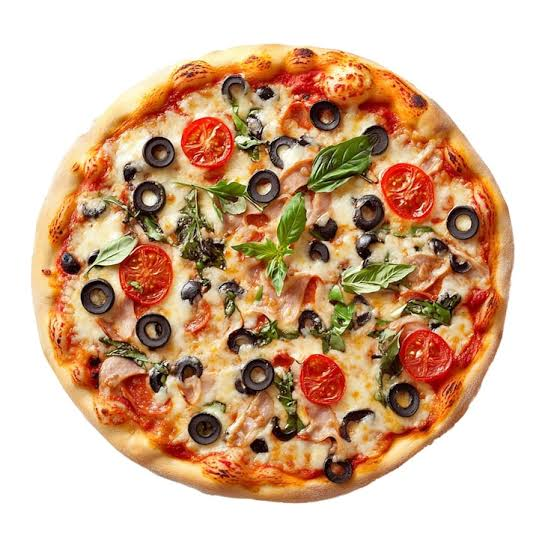

Pizza Recipe

This is how to make a tomato cheese pizza
A homemade pizza is a delicious, cheesy dish made with a soft, freshly prepared dough, rich tomato sauce,
melted mozzarella cheese, and tasty toppings. It is baked until the crust becomes golden brown and crispy
while the cheese melts beautifully.
For the dough
- 2 cups of all purpose flour
- 1 teaspoon instant yeast
- 1 teaspoon sugar
- 1/2 teaspoon salt
- 3/4 cup of warm water
- 2 table spoon of cooking oil
For the topping
- 1/2 cup of pizza or tomato sauce
- 1 and half cup of grated or morizilla cheeze
- Sliced onions
- Sliced sweet peppers
- Sliced tomatoes
- A little orgeon
Steps
- Prepare the dough
- Knead
- Allow to rinse
- Shape the pizza
- Add the sauce
- Add toppings
- Bake
- Serve